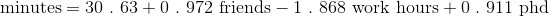

15.3 拟合模型
就像对简单线性模型所做的那样，我们这里也需要寻找一个能够最小化误差的平方和的 beta 。要想以手动方式找到一个精确的解可不是一件容易的事，因此，我们转而求助于梯度下降。下面我们首先创建一个待最小化的误差函数。对于随机梯度下降来说，我们只需要单次预测对应的平方误差：
def error(x_i, y_i, beta):
return y_i - predict(x_i, beta)
def squared_error(x_i, y_i, beta):
return error(x_i, y_i, beta) ** 2
如果你熟悉微积分，可以通过下面的方式进行计算：
def squared_error_gradient(x_i, y_i, beta):
"""the gradient (with respect to beta)
corresponding to the ith squared error term"""
return [-2 * x_ij * error(x_i, y_i, beta)
for x_ij in x_i]
否则的话，就按照我说的来。
至此，我们就可以利用随机梯度下降法来寻找最优的 beta 了：
def estimate_beta(x, y):
beta_initial = [random.random() for x_i in x[0]]
return minimize_stochastic(squared_error,
squared_error_gradient,
x, y,
beta_initial,
0.001)
random.seed(0)
beta = estimate_beta(x, daily_minutes_good) # [30.63, 0.972, -1.868, 0.911]
这样的话，我们的模型就变成了：
